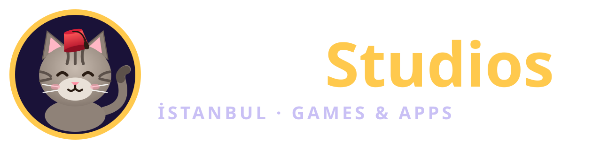
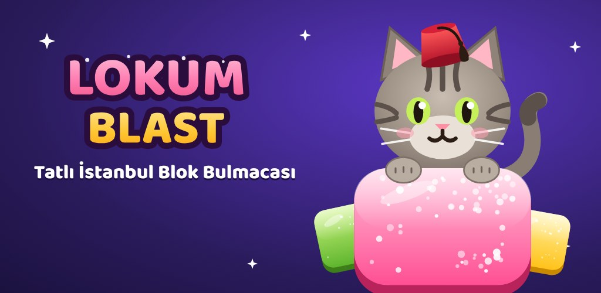
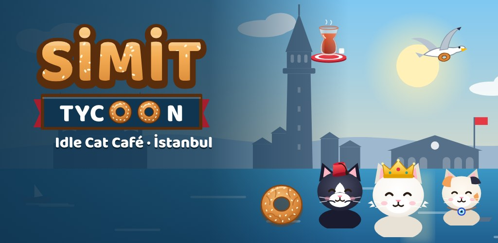
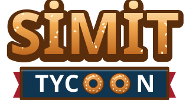

Basın kitiPress kit
Tekir Studios
Tekir Studios, İstanbul merkezli bağımsız bir mobil oyun ve uygulama stüdyosu. İlk oyunu Lokum Blast, dünyanın en sevilen bulmaca türünü İstanbul’un renkleriyle buluşturuyor. İkinci oyunu Simit Tycoon ise kedi müdürlerle İstanbul’un sokak lezzetlerinden bir imparatorluk kurduğun bir idle tycoon.Tekir Studios is an independent mobile games and apps studio based in Istanbul. Its first game, Lokum Blast, brings the world’s favourite puzzle genre to life with the colours of Istanbul. Its second, Simit Tycoon, is an idle tycoon where cat managers help you build an empire of Istanbul street food.
| StüdyoStudio | Tekir Studios (Tekir Games · Tekir Labs) |
|---|---|
| MerkezBased in | İstanbul, TürkiyeTürkiye |
| KuruluşFounded | 2026 |
| OyunlarGames | Lokum Blast: Block Puzzle · Simit Tycoon: Idle Cat Café |
| PlatformlarPlatforms | iOS, iPadOS, Android |
| İş modeliBusiness model | Ücretsiz; uygulama içi satın alma, isteğe bağlı reklam, abonelik (Tekir Kulübü, Kedi Kulübü)Free to play; in-app purchases, optional ads, subscriptions (Tekir Club, Cat Club) |
| DillerLanguages | Türkçe, English, Deutsch, Español, Français, Português |
| Basın iletişimPress contact | basin@tekirstudios.com |
Logolar ve görsellerLogos and images
Görseller, Tekir Studios ve oyunları hakkında haber ve inceleme amacıyla serbestçe kullanılabilir.Images may be used freely for news and reviews about Tekir Studios and its games.


Stüdyo logosu (SVG)Studio logo (SVG)

Ana görsel (1024×500)Key art (1024×500)

Simit Tycoon ana görseli (1024×500)Simit Tycoon key art (1024×500)

Simit Tycoon logosu (SVG)Simit Tycoon logo (SVG) Maskot: Tekir (SVG)Mascot: Tekir (SVG)
Maskot: Tekir (SVG)Mascot: Tekir (SVG)